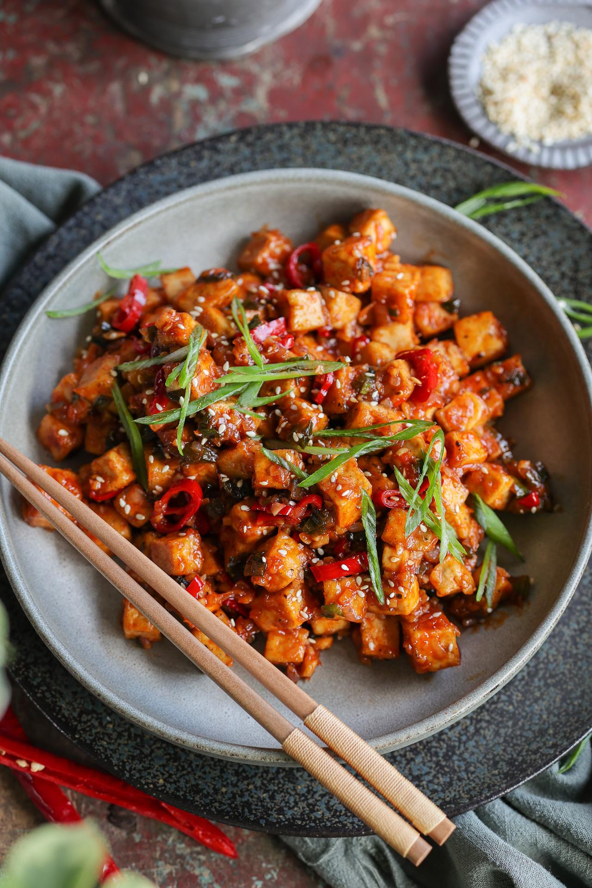

Spicy Peanut Tofu

Ingredients
- 1 block of Nasoya super firm tofu
- Cornstarch
- Salt
- Rice for serving
Sauce:
- Fly by Jing chili oil
- Mighty Sesame Co. tahini
- Soy sauce
- Mirin or rice vinegar
- Sugar or sweetener of choice
- Garlic
- Onion powder
- Scallions
Instructions:
- Coat tofu with some cornstarch and salt
- Fry in some olive oil until crispy
- Meanwhile, mix the sauce by combining all ingredients to taste
- Once the tofu is crispy and golden brown, pour the sauce over and let coat for a minute or two. Then serve over rice.